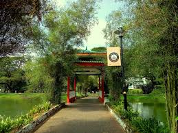

| Taiping Lake Gardens | Bukit Larut (Maxwell Hill) | Famous Food | Rainy Weather | Heritage Buildings |
|---|---|---|---|---|
|
Rainy Corner | ||||
|
Larut Matang Hawker Centre | ||||
|  |
Taiping Seven Village Noodle House | |||
| The perfect spot for relaxing walks and beautiful sunsets. | If you’re up for adventure and cool weather! | Cendol, pasembur, and other mouth-watering local dishes. | Taiping is famous for being the wettest town in Malaysia. You’ll never need to complain about the heat! | A blend of old and new, showcasing Taiping’s rich history. |